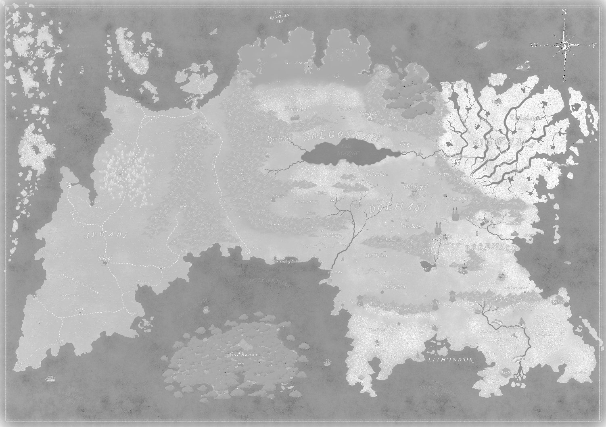

Fantsy Map to a vector polygon
Published on March 6st, 2023
I have for a D&D campaing made a fantasy map in a none GIS map software, which makes it easy to make good looking fantasy maps. However I now wanted to import the map in QGIS to create vector data out of my .jpg fantasy map.

I used a custom plugin in QGIS ('Freehand raster georeference') to re-scale the image based on the hex grid scale I have on the map. As each grid is about 39km I used the CRS WGS 1984 Mercator and placed the map at equator to prevent as much distortion as possible
After importing the raster image in the correct scale I wanted to create a vector polygon of the landmass of my continent. Using knowledge from remote sensing on how to calculate a NDWI (Normalized Difference Water Index) calulated as: (G-NIR)/(G+NIR). However my map is not a landsat 7 or 8 raster image with a NIR band, but the spectral signatures is much simpler on a image. I ended up adapting the formula to make the colour blue as dark as possible so it would be more easy to isolate water and none water bodies at a later point. The formula I ended up using in raster calculator was: ((Red + Green) - Blue) / ((Red + Green) + Blue)
